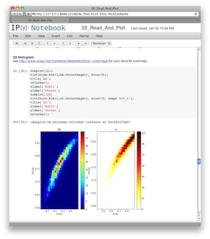
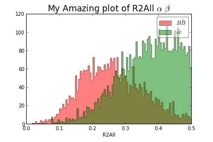
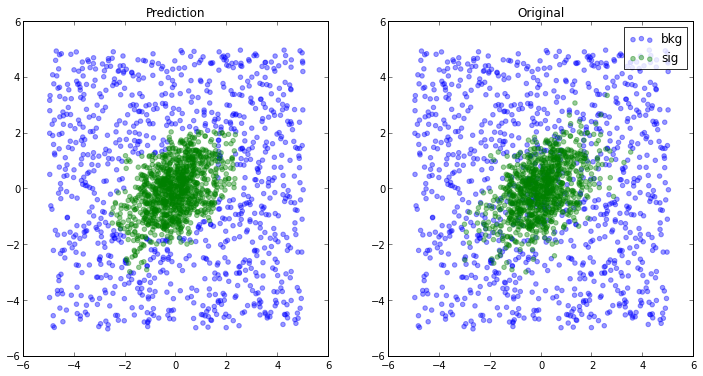
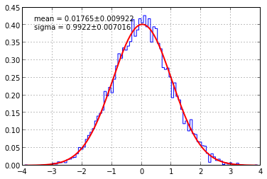

Introduction
Python is a very
expressive language which means you type less to do more. We have been
using Python for our analysis for more than a year. Interactive
environment provided by IPython couples with
matplotlib
allows us to make beautiful plots with quick turnaround. Analysis Tools can
take full advantage Python's introspection capability. This enables us to think
less about how to get the tools to do what we want
and focus more on the analysis. In this tutorial we will be covering
how to perform various analysis procedures typically done after skimming process with
IPython. Take a look at our advertisement slides
for why we think IPython will make life easier.
Location and Time
Somewhere at SLAC. There will be 2 sessions. The tutorial session will be on
the day AFTER the collaboration meeting.
So make sure you book your flight for an extra day (leaving on Thursday afternoon
or Friday).
-
Setup Session. One hour long session on Monday Jan 28 2013 12:20pm-13:20pm to
help you set your laptop with necessary tools. Preparation instruction
is given here. It is recommended that you try to follow
to follow instruction before coming to the session. If there is any problem
with installation, come to this session for help
-
Tutorial Session Three hour long tutorial seesion on Thursday 31st Jan 2013 8:30am-12:30pm,
the day right AFTER the collaboration meeting. Remember to book your plane ticket
for an extra day.
Topics




Set Up Your Laptop
Using Virtual Machine (Any OS can do this)
Big download but very easy install. This way you don't really have to mess with your system and you
can throw it away afterward if you don't like it. [Show]
- Donwload and install Virtualbox and Virtualbox Extension pack which can be found on the same page.
- Download our Virtual Appliance(~1 GB). It's pretty big (~3-4 GB) after decompression. It's Ubuntu 12.04 with everything we need for this tutorial installed.
- Open your virtualbox. Click [File]...[Import Appliance] and choose OVA file you just downloaded, or simple double click the OVA file from your host machine.
-
Check reinitialize MAC address or else SLAC network might get confused.
If you forgot to do this, go to [Setting]...[Network]..[Advance] and regenerate the MAC address.
-
You will see pythontutorial virtual machine show up on the list. Just double click it. You will boot into Ubuntu desktop.
- If it complains about USB driver etc., you can fix it by dowload
Virtualbox Extension Pack OR [Setting]...[Ports]...[USB] and uncheck Enable USB Controller.
- There is a working version of tutorial at
~/babar_python_tutorial. Open a Terminal. There is a terminal icon on the left hand side. (If you dont't find the Terminal icon, click the top-left Ubuntu "Dash Home" button and type terminal to search the app). Then follow the steps in Test it out section below (skipping git clone ..., but you may need to git pull. See that section for detail).
Ubuntu
I did this one freshly installed 12.04. [Show]
sudo apt-get install git subversion build-essential dpkg-dev make g++ gcc gfortran binutils libx11-dev libxpm-dev libxft-dev libxext-dev libpcre3-dev libfftw3.dev python-dev libpng-dev libblas-dev liblapack-dev t1-xfree86-nonfree ttf-xfree86-nonfree ttf-xfree86-nonfree-syriac xfonts-75dpi xfonts-100dpi
cd /usr/local/src
#or grab the latest one from their website
sudo wget ftp://root.cern.ch/root/root_v5.34.03.source.tar.gz
sudo tar xvf root_v5.34.03.source.tar.gz
cd root
sudo ./configure --prefix=/usr/local
sudo make
sudo make install
#make sure your system knows how to load root dynamic lib
sudo echo /usr/local/lib/root | sudo tee /etc/ld.so.conf.d/cern-root.conf
sudo ldconfig
sudo apt-get install python-setuptools python-pip
sudo pip install numpy
sudo pip install scipy
sudo pip install --upgrade tornado pyzmq ipython matplotlib scikit-learn root_numpy iminuit probfit cython
Mac OSX
Please report if it works or not.
I do not have a clean mac to try out.[Show]
- Install Python 2.7.x (Not 3.x).
- You may have this install already try typing
python --version. It should
say something like Python 2.7.1. If you have anything older than 2.7.x then you will
need to reinstall it.
- If you have older version, download it form here.
- Install fortran compiler If you don't have one already.
- Try
gfortran --version
- Download them 10.6, 10.7 and for 10.8
- brew and macports also offer their corresponding gfortran.
- Install ROOT.
- You may have this installed already. Try typing
root and
root-config --incdir --libdir
If you they both give you something sensible then good.
- If you don't have one install it.
- Install pip.
- You may have it already try
pip --version
- If not,
easy_install --upgrade pip
- Install Various Python Packages
You can do all this with three simple steps.
pip install --upgrade numpy
pip install --upgrade scipy
pip install --upgrade ipython matplotlib tornado pyzmq scikit-learn root_numpy iminuit probfit
In case you need individual package[Show]
- Install IPython.
- You may have it already try
ipython --version. It should say 0.13
- Otherwise
pip install ipython
- You should be able to type
ipython --version
- Install tornado
- Try
python -c "import tornado; print tornado.version"
pip install tornado if you don't have one
- PyZmq
- Try
python -c "import zmq; print zmq.__version__"
pip install pyzmq if you don't have one
- numpy
- Try
python -c "import numpy; print numpy.__version__"
pip install numpy
- matplotlib
- Try
python -c "import matplotlib; print matplotlib.__version__"
pip install matplotlib
- scipy
- Try
python -c "import scipy; print scipy.__version__"
pip install scipy
- scikit-learn
- Try
python -c "import sklearn; print sklearn.__version__"
pip install scikit-learn
- root_numpy
- Try
python -c "import root_numpy; print root_numpy.__version__"
pip install root_numpy
- iminuit
- Try
python -c "import iminuit; print iminuit.__version__"
pip install iminuit
- probfit
- Try
python -c "import probfit; print probfit.__version__"
pip install probfit
Test it out
After you have setup your computer. You can test it out.
- Download our entire tutorial project.[ zip|
tar.gz].
Or
git clone git://github.com/piti118/babar_python_tutorial.git
from your terminal.
-
If you have cloned it before but want to get the latest version, go to the directory
cd ~/babar_python_tutorial/, then
git pull
-
cd to ~/babar_python_tutorial/notebooks directory.
-
You should be able to type
ipython notebook --pylab=inline --script
and a browser should pop up. You will be using this a lot.
I alias mine to
alias ipylabnb='ipython notebook --pylab=inline --script'
-
You will see 5 notebook choices. You should be able to
play with any of those. To go through each cell, just press
Shift+Enter.
{kind=link}
{kind=link}
{kind=link}
{kind=link}